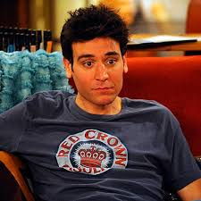

Ted
Theodore Evelyn "Ted" Mosby (nacido el 25 de abril de 1978) es uno de los cinco personaje principales de How I Met Your Mother, interpretado por Josh Radnor. En 2030, Ted se sentó a contar a sus hijos la historia de cómo conoció a la madre de ellos. A partir de 2005, a través de de su viaje se conoce que ha tenido muchas relaciones fallidas. Pero el arquitecto que se convirtió en profesor no va a renunciar a la búsqueda de la mujer perfecta. Ella esta ahí fuera, y cada episodio de la vida de Ted le lleva a un paso más cerca de conocerla.